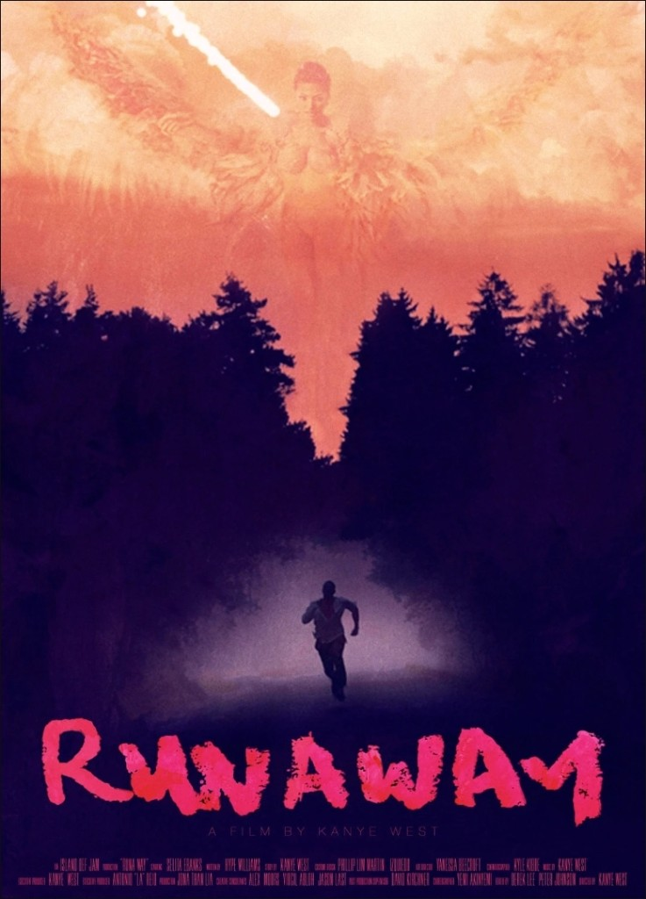
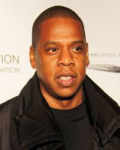
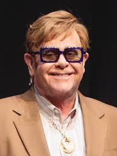

My Beautiful Dark Twisted Fantasy - 17-й лучший альбом за всю историю музыки по версии Rolling Stone
После эпизода с Тейлор Свифт и Бейонсе на VMA 2009 Канье оказался в эпицентре ненависти. Ответом стала не тишина, а масштабная работа: Гавайи, десятки музыкантов, оркестр, фильм Runaway и пластинка, которую критики до сих пор ставят в число лучших альбомов.
От сцены MTV к пластинке
13 сентября 2009 года на церемонии MTV VMA Тейлор Свифт получает награду за клип. Канье выходит на сцену и говорит, что у Бейонсе один из лучших видео за всю историю — речь про Single Ladies. Последовали бойкот, мемы и долгая медийная изоляция.
Через год с лишним, 22 ноября 2010, выходит My Beautiful Dark Twisted Fantasy — не извинение в форме поп-хита, а густой, кинематографичный альбом о славе, вине и красоте краха.
Фильм и живые выступления
Runaway (2010) — короткий музыкальный фильм на около 35 минут: Канье, Селита Эбэнкс в образе «Феникса», балет, огонь, роскошь и тревога. В кадре звучат фрагменты Runaway, All of the Lights, Power и других песен с альбома. Это не фоновый клип, а визуальная глава к пластинке.
На концертах того времени тот же язык: масштабная сцена, балерины, костюмы в духе обложек George Condo — шоу как продолжение фильма.
С чего начать: фильм на YouTube
Если ты впервые подходишь к эпохе MBDTF, разумный порядок такой: посмотреть полный фильм Runaway, почувствовать визуальный и музыкальный максимализм, а уже потом идти в треклист ниже. Так легче уловить связь между сценой VMA, образом Феникса и самой пластинкой.

Полный фильм открывается по ссылке в новой вкладке. Если ролик недоступен в твоем регионе, поищи «Kanye West Runaway full film» на YouTube или в другом источнике.
Совет для первого прослушивания: сначала трек Runaway, затем фильм Runaway, потом альбом от первого до последнего трека — так лучше читается линия после VMA.
Треки по порядку
Нажми на название — в плеере ниже откроется трек на Spotify (нужен интернет; в некоторых регионах доступ ограничен). Тот же альбом можно открыть в Яндекс Музыке — ссылка под треклистом.
-
вступление с хором Никки Минаж; сразу ясно: это не «под вечеринку», а широкая постановка.
-
гитара, Kid Cudi, Raekwon, ночной настрой.
-
хит с сэмплом King Crimson; знаком многим даже без всего альбома.
-
оркестр, передышка перед ударом.
-
Rihanna, барабаны, десятки имен в титрах; максимализм света и давления.
-
Jay-Z, Rick Ross, Nicki Minaj, Bon Iver; почти хоррор в звуке.
-
плотный состав: Jay-Z, Pusha T, Swizz Beatz, RZA и другие.
-
соул и Rick Ross; запоминающееся соло.
-
центр альбома: фортепиано, vocoder, Pusha T.
-
темный электро-рок про секс и славу как кошмар.
-
John Legend, сэмпр Aphex Twin, ирония и боль.
-
Bon Iver, гипнотический мост к финалу.
-
Gil Scott-Heron, политический выдох после личного шторма.
Кто стоял за звуком и обложкой
Продюсеры и соавторы: No I.D., Mike Dean, Q-Tip, RZA, Bink, Jeff Bhasker, S1 и другие. Гости: Jay-Z, Rick Ross, Pusha T, Nicki Minaj, Kid Cudi, John Legend, Rihanna, Bon Iver (Justin Vernon), Elton John, Alicia Keys, Fergie, La Roux и еще длинный список. Визуальный ряд альбома — картины George Condo (несколько вариантов обложки, часть магазины не брали).


Оценки критиков
На Metacritic релиз обычно удерживает около 94 из 100: «максимализм», «опера о славе», частые попадания в списки лучших альбомов десятилетия и современной поп-музыки.
Цифры стриминга
Песни с альбома стали мировыми хитами и набрали миллиарды прослушиваний на стриминговых платформах по всему миру (в сумме по отдельным трекам и переизданиям). Точные счетчики каждый день растут — смотри актуальные цифры в карточках треков в Spotify, Apple Music или Яндекс Музыке.
Виниловое издание
Классический формат: три пластинки (3LP), gatefold, арт George Condo, набор вкладышей, постер 24×24 дюйма, плотная полиграфия. Встречаются разные прессы и цвета винила (в т.ч. переиздания) — детали по конкретному изданию смотрят на Discogs по каталожному номеру.
Включи My Beautiful Dark Twisted Fantasy от первого трека до финала — это один из тех альбомов, где хочется слушать целиком, а не выдергивать только синглы.